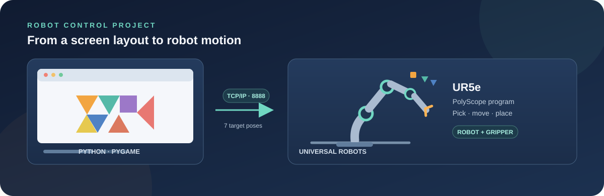
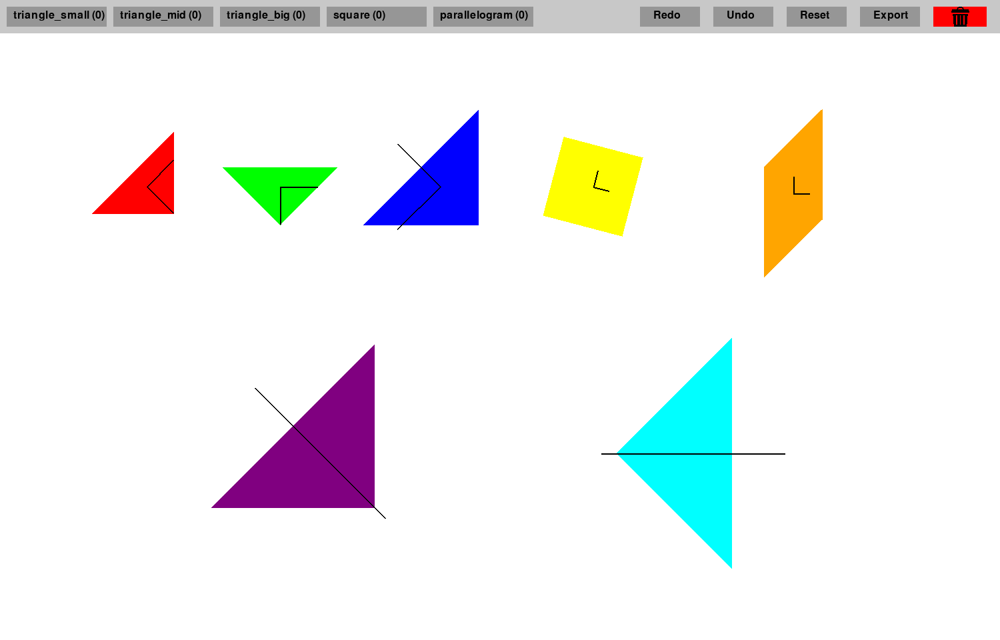
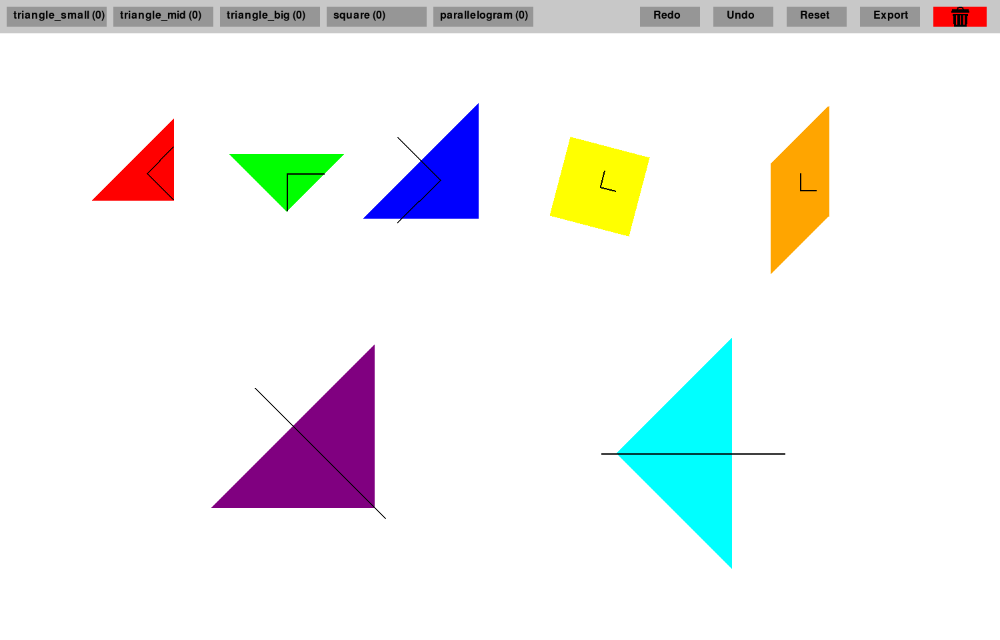

Tangram robotisé avec UR5e
Composer un tangram sur écran, puis faire assembler ses sept pièces par un robot UR5e.
Problématique et objectifs
Une disposition préparée à l’écran doit être convertie en positions et orientations dans le repère du robot. Réaliser cette conversion manuellement pièce par pièce complique les ajustements et leur répétition. L’objectif est de passer d’une composition graphique des sept pièces à une séquence de prises et de dépôts par le robot UR5e.
Approches et choix techniques
L’application Python et Pygame fournit un plateau 2D avec déplacement, alignement magnétique, rotations par pas de 15 degrés et commandes d’annulation. À l’export, les coordonnées de l’écran sont converties en poses à six valeurs dans la zone de travail configurée, puis envoyées par TCP au programme PolyScope qui exécute la séquence avec le préhenseur. L’interface et l’édition restent côté PC, l’exécution des mouvements côté contrôleur UR.
Résultats et limites
Le projet relie l’édition visuelle à un programme de prise et de dépôt sur UR5e. La précision physique, la calibration du montage et les performances de bout en bout ne sont pas quantifiées dans le dépôt. La conversion des coordonnées et la zone de travail doivent être adaptées et calibrées ; l’outil ne vérifie ni les collisions ni les contraintes de sécurité du robot.
Ressources

